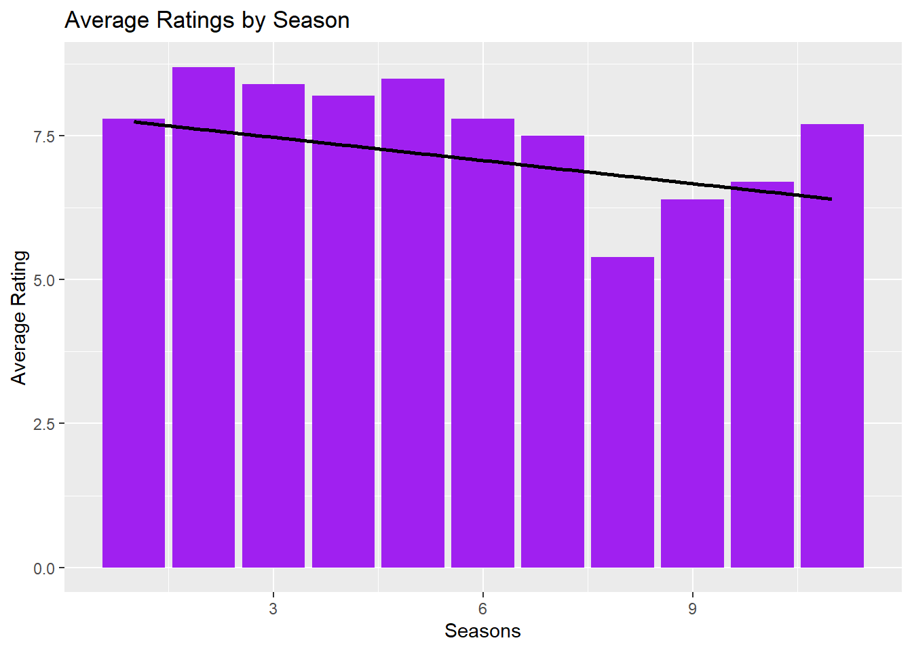
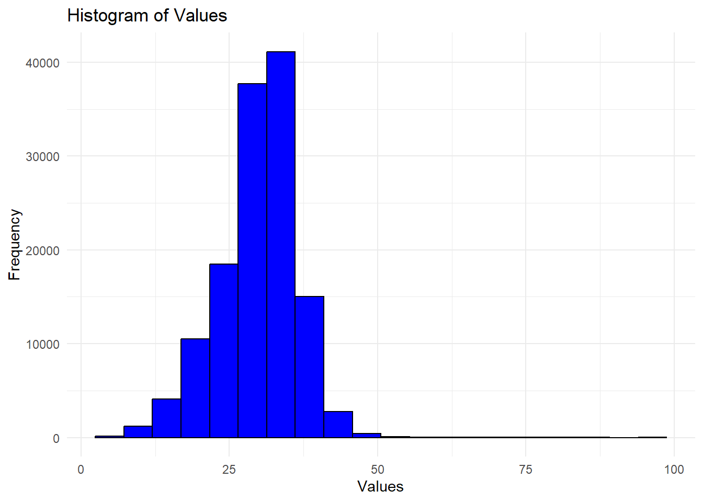
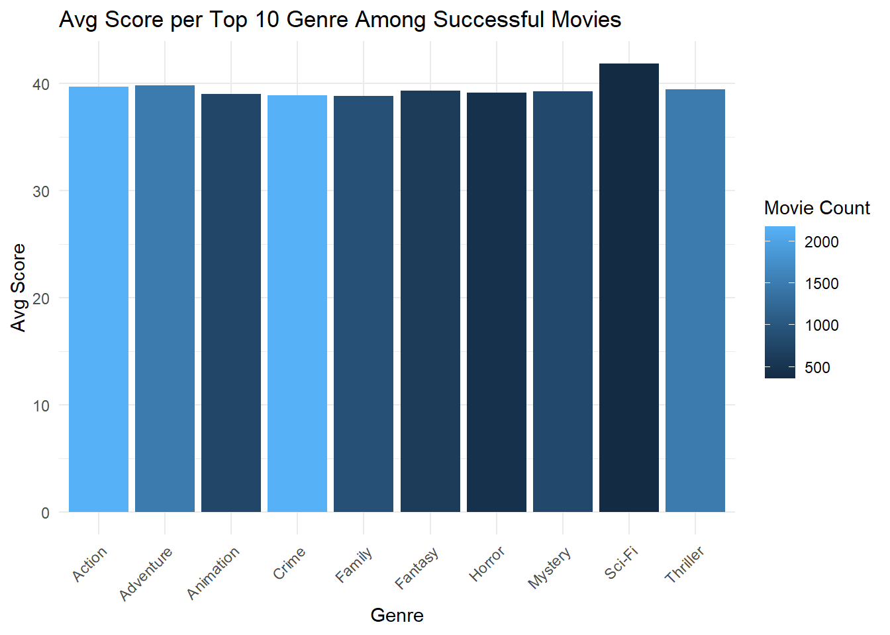
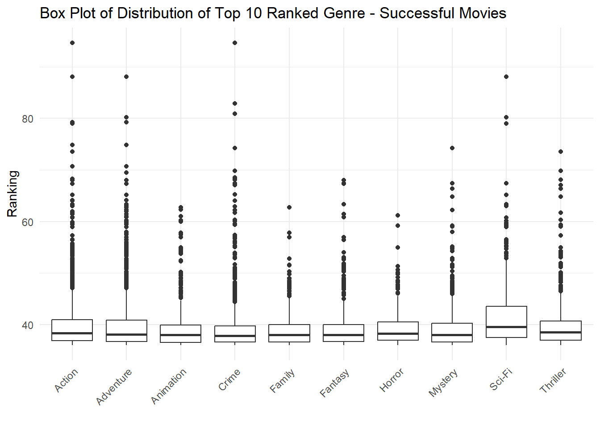
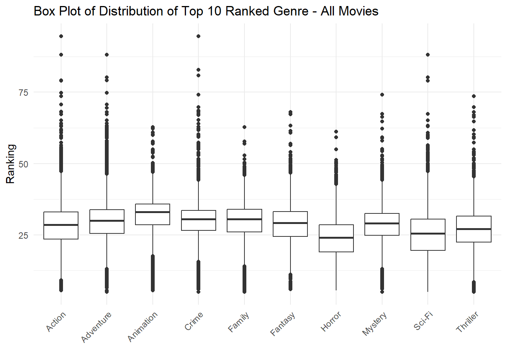
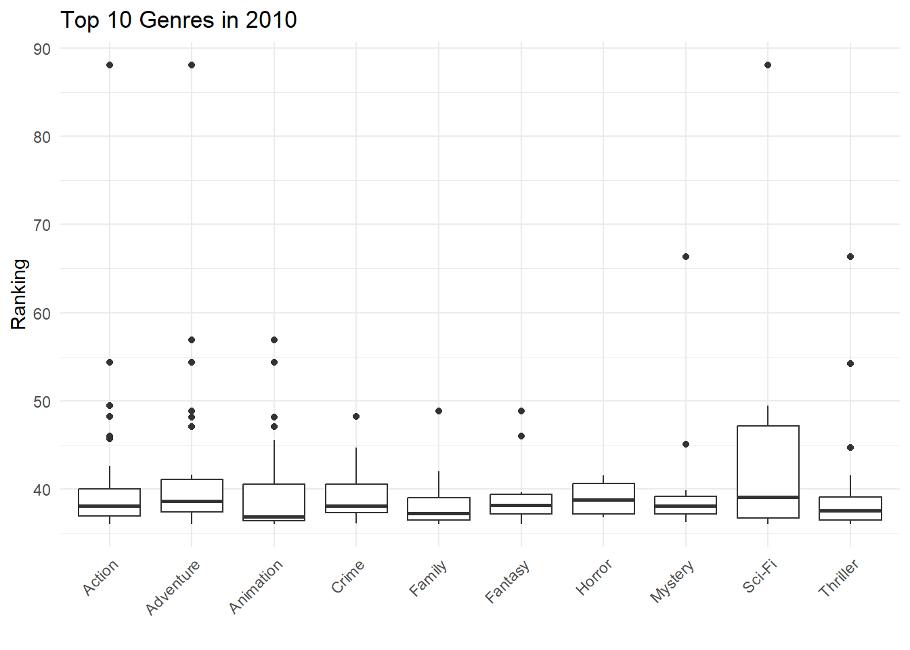
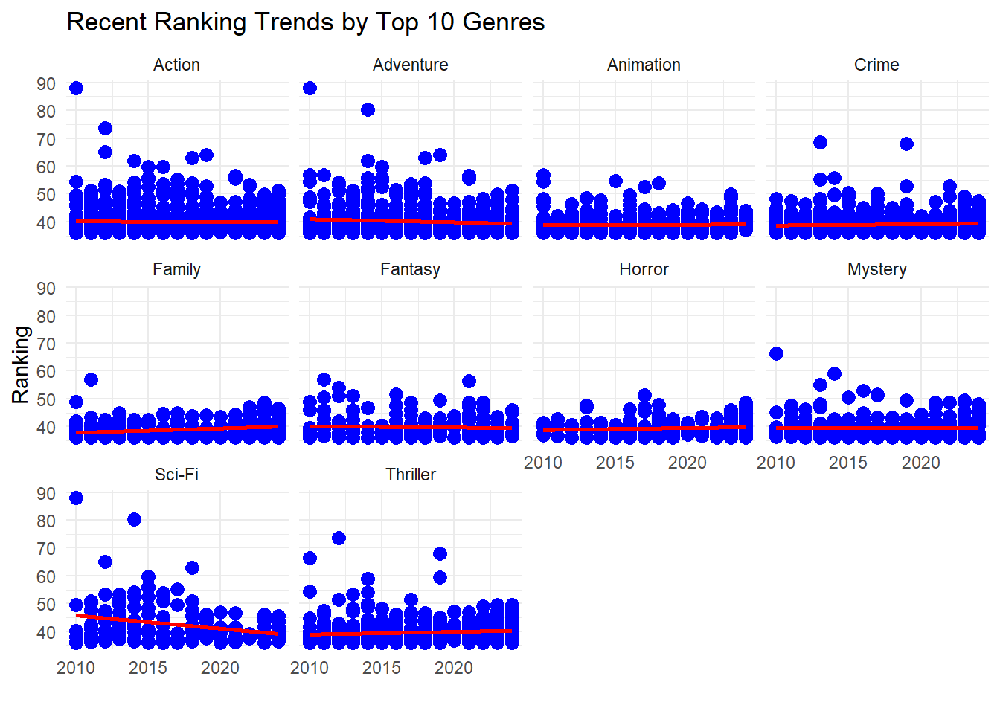
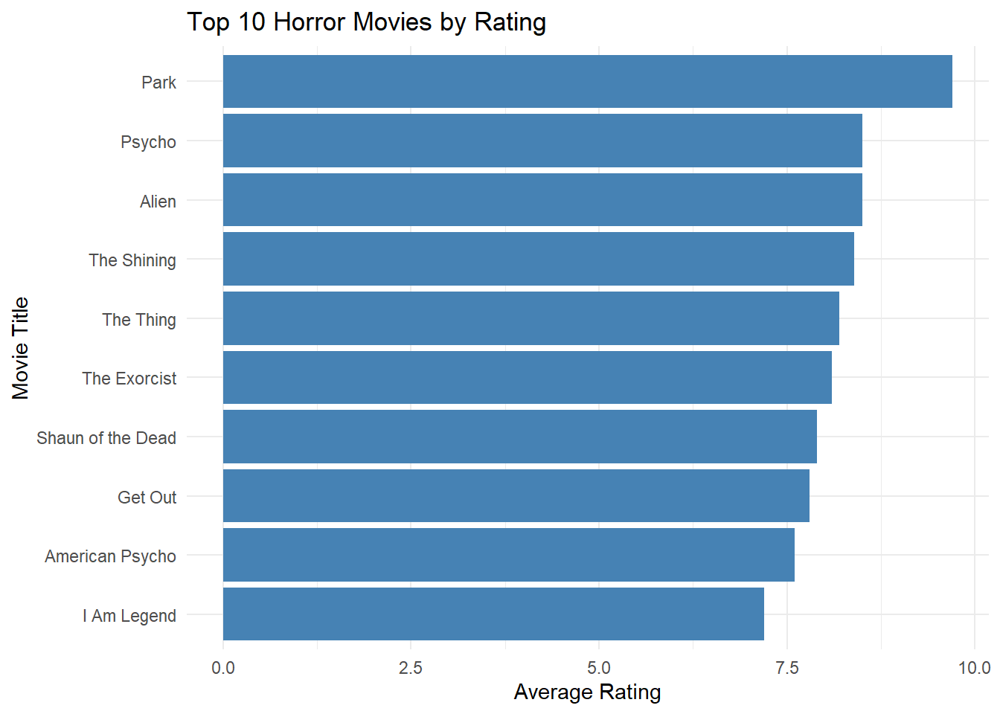

get_imdb_file <- function(fname){
BASE_URL <- "https://datasets.imdbws.com/"
fname_ext <- paste0(fname, ".tsv.gz")
if(!file.exists(fname_ext)){
FILE_URL <- paste0(BASE_URL, fname_ext)
download.file(FILE_URL,
destfile = fname_ext)
}
as.data.frame(readr::read_tsv(fname_ext, lazy=FALSE))
}
NAME_BASICS <- get_imdb_file("name.basics")MP02
Mini-Project #02: The Business of Show Business
Table of Contents
1. Introduction
The objective of this analysis is to identify trends, patterns and other factor that contribute to the success of a movie. While there are many factors that contribute to a successful movies, being able to identify common factors can be detrimental to green light a new movie.
This project will attempt to identify trends in popular movies by using IMBD data. This data will allow us to use quantifiable people’s opinion of movies without having to survey a large population. Ideally, the result will be the next blockbuster to come to theaters.
2. Data Sources
There are two ways to obtain the IMBD data used in this analysis. Option A is to download it from IMBD website. Beware, the files are ginormous and may crash your computer. Option B will show how to import the data after you downloaded the csv files. I used Option A
Option A:
TITLE_BASICS <- get_imdb_file("title.basics")TITLE_EPISODES <- get_imdb_file("title.episode")TITLE_RATINGS <- get_imdb_file("title.ratings")TITLE_CREW <- get_imdb_file("title.crew")TITLE_PRINCIPALS <- get_imdb_file("title.principals")Option B:
Local CSV file Download
library(dplyr)
library(tidyverse)
NAME_BASICS <- read.csv("name_basics_small.csv")
TITLE_BASICS <- read.csv("title_basics_small.csv")
TITLE_EPISODES <- read.csv("title_episodes_small.csv")
TITLE_RATINGS <- read.csv("title_ratings_small.csv")
TITLE_CREW <- read.csv("title_crew_small.csv")
TITLE_PRINCIPALS <- read.csv("title_principals_small.csv")The data sets used in this analysis consisted of:
- NAME_BASICS: Data for cast members of all movies/shows.
- TITLE_BASICS: Data pertaining to the title of movies/shows.
- TITLE_EPISODES: Data pertaining to the episodes of shows.
- TITLE_RATINGS: Data pertaining to review ratings for movies/shows.
- TITLE_CREW: Data pertaining to directors and writers for movies/shows.
- TITLE_PRINCIPALS: Data for the characters of movies/shows.
3. Data Cleaning and Pre-processing
For the purpose of this exercise, we will remove all data point with missing data. Since we only want box office hits, we will remove the movies/shows with less than 100 reviews.
Below you will see that majority of the titles in the data set have less than 100 reviews.
Titles with Less Than 100 Ratings - Graph
TITLE_RATINGS |>
ggplot(aes(x=numVotes)) +
geom_histogram(bins=30) +
xlab("Number of IMDB Ratings") +
ylab("Number of Titles") +
ggtitle("Majority of IMDB Titles Have Less than 100 Ratings") +
theme_bw() +
scale_x_log10(label=scales::comma) +
scale_y_continuous(label=scales::comma)
Removed the titles with less than 100 reviews to the TITLE_RATINGS data set with the following code:
Only Titles with 100 reviews or more - TITLE_RATINGS
TITLE_RATINGS <- TITLE_RATINGS |>
filter(numVotes >= 100)We applied this filters to all the other data sets that start with TITLE_*:
Only Titles with 100 reviews or more - TITLE_*
TITLE_BASICS <- TITLE_BASICS |>
semi_join(TITLE_RATINGS,
join_by(tconst == tconst))
TITLE_CREW <- TITLE_CREW |>
semi_join(TITLE_RATINGS,
join_by(tconst == tconst))
TITLE_EPISODES_1 <- TITLE_EPISODES |>
semi_join(TITLE_RATINGS,
join_by(tconst == tconst))
TITLE_EPISODES_2 <- TITLE_EPISODES |>
semi_join(TITLE_RATINGS,
join_by(parentTconst == tconst))
TITLE_EPISODES <- bind_rows(TITLE_EPISODES_1,
TITLE_EPISODES_2) |>
distinct()
TITLE_PRINCIPALS <- TITLE_PRINCIPALS |>
semi_join(TITLE_RATINGS, join_by(tconst == tconst))
rm(TITLE_EPISODES_1)
rm(TITLE_EPISODES_2)Ensuring each column is the correct data type:
NAME_BASICS -> numberic data type transformation
NAME_BASICS <- NAME_BASICS |>
mutate(birthYear = as.numeric(birthYear),
deathYear = as.numeric(deathYear))4. Data Exploration
Task 2: Instructor-Provided Questions
How many movies are in our data set? How many TV series? How many TV episodes?
Answer: There are 131,662 movies, 29,789 TV series and 155,722 episodes.Who is the oldest living person in our data set?
Answer: For this question, we assumed that the oldest possible acting age was 115. With that assumption, the oldest actor was Antonio L. Ballesteros at 114 years old. He was born in 1910.There is one TV Episode in this data set with a perfect 10/10 rating and at least 200,000 IMDb ratings. What is it? What series does it belong to?
Answer: The episode name is Ozymandias , which is part of the Breaking Bad series.What four projects is the actor Mark Hamill most known for?
Answer: He is best known for:
- Star Wars: Episode IV - A New Hope
- Star Wars: Episode VIII - The Last Jedi
- Star Wars: Episode V - The Empire Strikes Back
- Star Wars: Episode VI - Return of the Jedi
What TV series, with more than 12 episodes, has the highest average rating?
Answer: Breaking bad has 62 epsidoes and an average rating of 9.5 with over 2,208,030 reviews.The TV series Happy Days (1974-1984) gives us the common idiom “jump the shark”. The phrase comes from a controversial fifth season episode (aired in 1977) in which a lead character literally jumped over a shark on water skis. Idiomatically, it is used to refer to the moment when a once-great show becomes ridiculous and rapidly looses quality.
Is it true that episodes from later seasons of Happy Days have lower average ratings than the early seasons?
We see that the show had an overall decline in popularity (black trend line). After 1977 or season 5, the show had a more rapid decline with season 8 (year 1981) being the least popular. Season 9 (year 1981) saw a bit of an increase from the previous year but still declines in polarity overall. we visualize this by the code found in “Task 2 Question 6 - Graph” & “Task 2 Question 6 - Table” below.
Code for answers above:
Task 2 Question 1
t2q1 <- TITLE_BASICS |>
filter(titleType =="movie" | titleType =="tvEpisode" | titleType =="tvSeries") |>
group_by(titleType) |>
summarise(unique_count = n_distinct(tconst))Task 2 Question 2
t2q2 <- NAME_BASICS |>
select(primaryName, birthYear,deathYear) |>
mutate(age = 2024 - birthYear) |>
filter(is.na(deathYear)) |>
filter(age<115) |>
arrange(desc(age)) |>
slice(1)Task 2 Question 3
t2q3 <- TITLE_RATINGS |>
filter(averageRating==10) |>
filter(numVotes>=200000) |>
pull(tconst)
t2q3_ep <- TITLE_BASICS |>
filter(tconst==t2q3) |>
pull(originalTitle)
t2q3_series <- TITLE_EPISODES |>
filter(tconst==t2q3) |>
pull(parentTconst)
t2q3_seriesName <- TITLE_BASICS |>
filter(tconst==t2q3_series) |>
pull(originalTitle)Task 2 Question 4
t2q4 <- NAME_BASICS |>
separate_longer_delim(knownForTitles, ",") |>
rename("tconst" = knownForTitles) |>
left_join(TITLE_BASICS, by = "tconst") |>
filter(primaryName=="Mark Hamill") |>
select(primaryTitle)Task 2 Question 5
t2q5 <- TITLE_EPISODES |>
group_by(parentTconst) |>
summarise(No_episodes = n_distinct(tconst), .groups = 'drop') |>
filter(No_episodes>12) |>
rename("tconst" = parentTconst) |>
left_join(TITLE_RATINGS, by = "tconst") |>
left_join(TITLE_BASICS, by = "tconst") |>
arrange(desc(averageRating)) |>
select(primaryTitle, No_episodes, averageRating,numVotes) |>
slice(1)Task 2 Question 6
library(ggplot2)
library(RColorBrewer)
t2q6 <- TITLE_BASICS |>
filter(primaryTitle=="Happy Days" & startYear==1974) |>
pull(tconst)
t2q6_eps <- TITLE_EPISODES |>
filter(parentTconst == t2q6) |>
left_join(TITLE_RATINGS, by = "tconst") |>
left_join(TITLE_BASICS, by = "tconst") |>
mutate(season = as.numeric(seasonNumber)) |>
mutate(yearAir = as.numeric(startYear)) |>
mutate(episodeNum = as.numeric(episodeNumber)) |>
arrange(season, episodeNum) |>
select(-originalTitle, -isAdult, -titleType,-runtimeMinutes, -genres, -endYear, -seasonNumber,-episodeNumber )Task 2 Question 6 - Graph
#szn graphs
scatter_eps <- ggplot(t2q6_eps, aes(x = season, y = averageRating)) +
geom_bar(stat = "identity", position = position_dodge(), fill = "purple") +
geom_smooth(method = "lm", se = FALSE, color = "black") +
scale_fill_brewer(palette = "Set1")+
labs(title = "Average Ratings by Season",
x = "Seasons",
y = "Average Rating",
color="season")
print(scatter_eps)
Task 2 Question 6 - Table
#szn table
t2q6_szn <- t2q6_eps |>
group_by(season) |>
summarize(AverageSznRating = mean(averageRating), year_aired = min(startYear)) |>
mutate(year_air = as.numeric(year_aired)) |>
arrange(season)| Season | Avg Season Rating | Year Aired |
|---|---|---|
| 1 | 7.58 | 1974 |
| 2 | 7.69 | 1974 |
| 3 | 7.70 | 1975 |
| 4 | 7.43 | 1976 |
| 5 | 7.00 | 1977 |
| 6 | 7.02 | 1978 |
| 7 | 6.33 | 1979 |
| 8 | 5.40 | 1981 |
| 9 | 6.40 | 1982 |
| 10 | 6.70 | 1982 |
| 11 | 7.33 | 1983 |
Defining Success
Our metric for success is simple and fair. The metric ranks a movie out of 100. The ranking formula is as follows:
Rank = (50 x (Avg Rating/10)) + (50 x (Number of Reviews/Max Reviews))
This formula put an equal importance on average rating and numbers of reviews, which correlates to quality and number of viewership. For this exercise, we wanted to focus on movies that had a “large” amount of reviews. Our definition of Large is any movie with more than 970 reviews. We defined this by finding the quartile of for the movie reviews and chose the 75th quartile, essentially dealing with the top 25% percent.
Quantifying Success
Task 3: Custom Success Metric
Design a ‘success’ measure for IMDb entries, reflecting both quality and broad popular awareness. Implement your success metric using a mutate operator to add a new column to the TITLE_RATINGS table.
Validate your success metric as follows:
Choose the top 5-10 movies on your metric and confirm that they were indeed box office successes.
We have confirmed our algorithm is accurate by verifying the top 5 movies are indeed box office hits:- The Shawshank Redemption
- The Dark Knight
- Inception
- Fight Club
- Forrest Gump
Choose 3-5 movies with large numbers of IMDb votes that score poorly on your success metric and confirm that they are indeed of low quality.
We have confirmed our algorithm is accurate by verifying the top 5 movies are indeed box office hits:- 2025 - The World enslaved by a Virus
- 321 Action
- A Cosmic Adventure on Earth
- The Crimean Bridge. Made with Love!
- Elment az
Choose a prestige actor or director and confirm that they have many projects with high scores on your success metric.
This analysis decide to spot check for Morgan Freeman. Often referred to as the “Voice of God”, this actor had to have multiple movies with high ranking in our algorithm. It was confirmed that Morgan Freeman had multiple box office hits according to this algorithm.- The Shawshank Redemption
- The Dark Knight
- Se7en
- The Dark Knight Rises
- Million Dollar Baby
Perform at least one other form of ‘spot check’ validation.
This analysis decide to do another spot check for Brad Pitt. It was also confirmed that Brad Pitt had multiple box office hits according to this algorithm.- Fight Club
- Se7en
- Inglourious Basterds
- The Departed
- Snatch
Come up with a numerical threshold for a project to be a ‘success’; that is, determine a value \(v\) such that movies above \(v\) are all “solid” or better.
anything above 36 can be considered as a successful Movie. The mode is observed at 35, which indicates it is somewhat difficult to get a rank higher than the 3rd quartile This can be visualized in “Task 3 Question 5 - Quantifying Success - Frequency Graph” below. \(v\) = 35.
Code for answers above:
Task 3 Question 1 - Top 5
#q1
max_votes <- TITLE_RATINGS |>
arrange(desc(numVotes)) |>
slice(1) |>
pull(numVotes)
#defining large number of votes as above 75% quartile which is 970
quartiles <- quantile(TITLE_RATINGS$numVotes, probs = c(0.25, 0.5, 0.75))
#confirmed these 5 are box hits
hits <- TITLE_RATINGS |>
filter(numVotes>970) |>
mutate(rank = (50 *(averageRating/10))+(50*(numVotes/max_votes))) |>
left_join(TITLE_BASICS, by = "tconst") |>
select(primaryTitle, rank,genres,tconst, titleType,averageRating, numVotes) |>
filter(titleType == "movie") |>
arrange(desc(rank)) |>
slice(1:5)Task 3 Question 2 - Bottom 5
hits_low <- TITLE_RATINGS |>
filter(numVotes>970) |>
mutate(rank = (50 *(averageRating/10))+(50*(numVotes/max_votes))) |>
left_join(TITLE_BASICS, by = "tconst") |>
select(primaryTitle, rank,genres,tconst, titleType,averageRating, numVotes) |>
filter(titleType == "movie") |>
arrange(rank) |>
slice(1:5)Task 3 Question 3 - Spot Check 1
hits <- TITLE_RATINGS |>
#filter(numVotes>970) |>
mutate(rank = (50 *(averageRating/10))+(50*(numVotes/max_votes))) |>
left_join(TITLE_BASICS, by = "tconst") |>
select(primaryTitle, rank,genres,tconst, titleType,averageRating, numVotes) |>
filter(titleType == "movie") |>
arrange(desc(rank))
morg <- NAME_BASICS |>
filter(primaryName == "Morgan Freeman") |>
slice(1:2)
# Nconst = nm0000151 or nm0293532
morg_movie <- TITLE_PRINCIPALS |>
filter(nconst == "nm0000151" | nconst == "nm0293532") |>
left_join(hits, by = "tconst") |>
arrange(desc(rank)) |>
slice(1:10) |>
select(primaryTitle, rank, genres,tconst, titleType,averageRating, numVotes)
#confirm they have multiple projects with high scoresTask 3 Question 4 - Spot Check 2
brad <- NAME_BASICS |>
filter(primaryName == "Brad Pitt")
# Nconst = nm0000093
brad_movie <- TITLE_PRINCIPALS |>
filter(nconst == "nm0000093") |>
left_join(hits, by = "tconst") |>
arrange(desc(rank)) |>
slice(1:10) |>
select(primaryTitle, rank, genres,tconst, titleType,averageRating, numVotes)
#confirm they have multiple projects with high scoresTask 3 Question 5 - Quantifying Success - Frequency Graph
quartiles_hits <- quantile(hits$rank, probs = c(0.25, 0.5, 0.75))
freq <- ggplot(hits, aes(x = rank)) +
geom_histogram(bins = 20, fill = "blue", color = "black") +
labs(title = "Histogram of Values",
x = "Values",
y = "Frequency") +
theme_minimal()
print(freq)
5. Results
Examining Success by Genre and Decade
Since the professor gave us a little more free reign in this task, we started to examine the popularity of genre by looking at the average Ranking score for the top 10 genre for successful movies. Our definition of success is a rank score of 36 or above, as define in Task 3 Question 5.
Task 4 - Top 10 Genres
##Task 4
gen <- TITLE_BASICS |>
separate_longer_delim(genres, ",") |>
filter(titleType=="movie") |>
mutate(theme = genres) |>
select (-genres, -originalTitle)
hits_gen <- hits |>
filter(rank>36) |>
left_join(gen, by = "tconst") |>
group_by(theme) |>
summarize(ranking = mean(rank, ra.rm = TRUE) , count_movie=n_distinct(tconst)) |>
filter(count_movie>15) |>
arrange(desc(ranking)) |>
slice(2:11) #removed the first column bc it was the score for movies with a blank genre "\\N"
print(hits_gen)# A tibble: 10 × 3
theme ranking count_movie
<chr> <dbl> <int>
1 Sci-Fi 41.9 362
2 Adventure 39.9 1494
3 Action 39.7 2178
4 Thriller 39.5 1495
5 Fantasy 39.3 625
6 Mystery 39.3 802
7 Horror 39.2 453
8 Animation 39.0 767
9 Crime 38.9 2181
10 Family 38.9 916Task 4 - Top 10 Genres
#graph 1 - avg score and density
ggplot(hits_gen, aes(x = theme, y = ranking, fill = count_movie)) + # Fill by genre for different colors
geom_bar(stat = "identity") + # Use the count values directly
labs(title = "Avg Score per Top 10 Genre Among Successful Movies",
x = "Genre",
y = "Avg Score",
fill= "Movie Count") +
theme_minimal() +
theme(axis.text.x = element_text(angle = 45, hjust = 1)) 
Since the average Ranking score for the top 10 genres are fairly similar, we would like to take a look at the distribution. The Box plot below will tell us if the movies within the genre stay within a certain ranking score or if there are enough data sets at each end of the spectrum to average out to a certain average ranking score.
Below we see that Action, Adventure, Crime, and Sci-Fi have the greatest range in distribution. In these genres, we can observe some data points that are proportionally better than the average. While the other genres stay within a mediocre ranking score.
Task 4 - Box plot - Succesful Movies
#graph 2 df
hits_gen1 <- hits |>
filter(rank>36) |>
left_join(gen, by = "tconst") |>
filter(theme=="Action" | theme=="Adventure" | theme=="Animation" |theme=="Crime" |theme=="Family" |theme=="Fantasy" | theme=="Horror" | theme=="Mystery" |theme=="Sci-Fi" |theme=="Thriller")
#graph 2
ggplot(hits_gen1, aes(x = theme, y = rank)) +
geom_boxplot() + # Box plot geometry
labs(title = "Box Plot of Distribution of Top 10 Ranked Genre - Successful Movies",
x = " ",
y = "Ranking") +
theme_minimal() +
theme(axis.text.x = element_text(angle = 45, hjust = 1)) 
Out of curiosity, I wanted to see how the Box plot would look like if we incorporated “Unsuccessful” movies as well. This will show us which movies have a higher probability to tank.
Below we can see that Horror movies have the highest probability of tanking.
Task 4 - Box plot - All Movies
#graph 2 df alternative
hits_gen1alt <- hits |>
#filter(rank>36) |>
left_join(gen, by = "tconst") |>
filter(theme=="Action" | theme=="Adventure" | theme=="Animation" |theme=="Crime" |theme=="Family" |theme=="Fantasy" | theme=="Horror" | theme=="Mystery" |theme=="Sci-Fi" |theme=="Thriller")
#graph 2 alt
ggplot(hits_gen1alt, aes(x = theme, y = rank)) +
geom_boxplot() +
labs(title = "Box Plot of Distribution of Top 10 Ranked Genre - All Movies",
x = " ",
y = "Ranking") +
theme_minimal() +
theme(axis.text.x = element_text(angle = 45, hjust = 1)) 
Since trends tend to be cyclic, I looked at last decade’s data. 2010 felt like an appropriate year to start exploring data. I began by looking at the data from 2010 releases, we explored which genre was most popular back then.
The result was in line with our previous results. In 2010, the most popular genre was Sci-Fi.
Task 4 - Box plot - Top 10 Genres in 2010
#graph 3 df - 2010 data
hits_gen2010 <- hits |>
filter(rank>36) |>
left_join(gen, by = "tconst") |>
filter(startYear=="2010") |>
filter(theme=="Action" | theme=="Adventure" | theme=="Animation" |theme=="Crime" |theme=="Family" |theme=="Fantasy" | theme=="Horror" | theme=="Mystery" |theme=="Sci-Fi" |theme=="Thriller")
#graph 3
ggplot(hits_gen2010, aes(x = theme, y = rank)) +
geom_boxplot() +
labs(title = "Top 10 Genres in 2010",
x = " ",
y = "Ranking") +
theme_minimal() +
theme(axis.text.x = element_text(angle = 45, hjust = 1)) 
Ideally, we would like to see a distribution of the top 10 genres in recent years, so from 2010 to 2024. The graph belows shows that almost all genres had a box office hit in the reecent years except for Horror and maybe Animation. We will keep this in mind for now.
Task 4 - Scatter Plot - Top 10 Genres in Recent Years
#graph 4 df - more recent data
hits_genRecent <- hits |>
left_join(gen, by = "tconst") |>
filter(rank>36) |>
mutate(year=as.numeric(startYear)) |>
arrange(desc(year)) |>
filter(year == "2010" | year=="2011"|year=="2012" | year=="2013" | year=="2014" | year=="2015"|year=="2016"|year=="2017"|year=="2018"|year=="2019"|year=="2020" |year=="2021"|year=="2022"|year=="2023"|year=="2024" ) |>
filter(theme=="Action" | theme=="Adventure" | theme=="Animation" |theme=="Crime" |theme=="Family" |theme=="Fantasy" | theme=="Horror" | theme=="Mystery" |theme=="Sci-Fi" |theme=="Thriller")
#graph 4
ggplot(hits_genRecent, aes(x = year, y = rank)) +
geom_point(color = "blue", size = 3) +
geom_smooth(method = "lm", color = "red", se = FALSE) +
facet_wrap(~ theme) +
labs(title = "Recent Ranking Trends by Top 10 Genres",
x = " ",
y = "Ranking") +
theme_minimal()
Selecting a Crew
At this point we can identify which genres are popular throughout time and recent trend. To save you the suspense, I will be selecting to pursue a pitch for a Horror movie. For the sole reason, that they are due for a blockbuster hit. In this section we will pick one director and two actors/actress.
Since I want to pitch a horror movie, I will look at the highest rated horror movies of recent years.
Task 4 - Top 10 Horror Movies
#which director has the highest rated horror movie
dirHorrorT10 <- hits_gen1 |>
filter(theme=="Horror") |>
arrange(desc(rank)) |>
slice(1:10)
ggplot(dirHorrorT10, aes(x = reorder(primaryTitle.x, averageRating), y = averageRating)) +
geom_bar(stat = "identity", fill = "steelblue") +
coord_flip() + # Flip coordinates to make the titles readable
labs(title = "Top 10 Horror Movies by Rating",
x = "Movie Title",
y = "Average Rating") +
theme_minimal()
Cultural references are important to my criteria when searching for a director. I want a movie director that is in tune with today’s culture. The movie Get out was among the top 5 rated Horror and the released fairly recent.
Task 4 - Selecting a Director
#which director has the highest rated horror movie
dirHorror <- hits_gen1 |>
filter(theme=="Horror") |>
arrange(desc(rank))
#who is the director tconst = tt5052448
dirName <- TITLE_PRINCIPALS |>
filter(tconst == "tt5052448")
#found the director nconst = nm1443502
dirName1 <- NAME_BASICS |>
filter(nconst=="nm1443502") |>
pull(primaryName)
print(paste("My director is" , dirName1))[1] "My director is Jordan Peele"I value comedy in Horror movies. Personally, I believe humor will let your guard go down and makes the viewer more vulnerable for jump scares.
Ranking the top 10 comedies, I notice Wolf of Wall Street, I remember enjoying the humor in that movie.
Task 4 - Selecting an Actress
#looking for relevant actors
actHorror1 <- hits |>
filter(rank>36) |>
left_join(gen, by = "tconst") |>
arrange(desc(rank)) |>
filter(theme == "Comedy") |>
slice(1:10)
#who is the actor tconst = tt0993846
actN1 <- TITLE_PRINCIPALS |>
filter(tconst == "tt0993846")
#who is the actress nconst = nm3053338
actName1 <- NAME_BASICS |>
filter(nconst=="nm3053338") |>
pull(primaryName)
print(paste("My first actress will be" , actName1))[1] "My first actress will be Margot Robbie"Now that we have a director and a funny actress, We need someone to carry a serious tone to juxtapose the whimsical actress. I will look into the best thrillers.
Ranking the top 10 thrillers, I decide to pick The Joker. That was considered a huge hit when it first came out.
Task 4 - Selecting an Actor
#actor2
actHorror2 <- hits |>
filter(rank>36) |>
left_join(gen, by = "tconst") |>
arrange(desc(rank)) |>
filter(theme == "Thriller")
#who is the actor tconst = tt7286456
actN2 <- TITLE_PRINCIPALS |>
filter(tconst == "tt7286456")
#who is the actress nconst = nm0001618
actName2 <- NAME_BASICS |>
filter(nconst=="nm0001618") |>
pull(primaryName)
print(paste("My second actor will be" , actName2))[1] "My second actor will be Joaquin Phoenix"Nostalgia and Remakes
A remake of Silence of the Lambs fits perfectly with the current trend in Hollywood. In recent years, we have observed more and more remakes of old classics. The success of these projects often lies in modernizing elements while preserving the core essence of the original. I believe that the Jordan Peele, Margot Robbie, and Joaquin Phoenix would bring in a modernizing tone. However, to preserve the core essence of the original movie, I plan to reach out to any of the member from the original movie.
I would reach out to anybody in the original cast who is 65 or youner to be respectful of the retirement age. The table below shows the possible staff member:
Task 6 - Nostalgia Staff
#Task 6 - Silence of the Lambs tconst = tt0102926
staff <- NAME_BASICS |>
separate_longer_delim(knownForTitles, ",") |>
filter(knownForTitles == "tt0102926") |>
#separate_longer_delim(primaryProfession, ",") |>
mutate(yearbirth = as.numeric(birthYear)) |>
mutate(age = 2024 - yearbirth) |>
filter(age<=65) |>
select(-nconst,-deathYear,-knownForTitles,-yearbirth)
print(staff) primaryName birthYear primaryProfession age
1 Jodie Foster 1962 actress,producer,director 62
2 Staci A. Blagovich 1967 casting_department,miscellaneous,producer 57
3 Cynthia Ettinger 1962 actress 62
4 Brent Hinkley 1962 actor 62
5 Q. Lazzarus 1960 actress,composer,soundtrack 64
6 Kasi Lemmons 1961 actress,director,writer 63
7 Bill McCue 1962 actor,miscellaneous,art_department 62
8 Marc Riley 1961 music_department,actor,writer 63
9 Steve Hanley 1959 music_department,soundtrack 65
10 Dennis Osborne 1965 director,writer,producer 596. Conclusion
In the last decade, the horror genre has not seen a blockbuster hit. As seen in “Task 4 – Scatter Plot – Top 10 Genres in Recent Years”, no horror movie has gotten a ranking score above 55 in the past decade. Very few films managed to capture the public’s eye in the same way as classics like “Silence of the Lambs.”
Imagine a reinterpretation of the iconic thriller directed by the one and only, Jordan Peele. He is known for his ability to blend horror with cultural narratives. Jordan Peele’s movie ‘Get Out’ has an average rating of 7.8 on IMBD, and it is the eighth best horror movies of recent times, as per “Top 10 Horror Movies by Rating – Graph”. Margot Robbie, portraying Clarice Starling, will bring strength and vulnerability to the role, showcasing her journey through a male-dominated FBI landscape. Known for her recent Barbie portrayal, Robbie will shift from her iconic, vibrant character to embody the gritty character. Opposite her, Joaquin Phoenix’s interpretation of Dr. Hannibal Lecter promises a fresh take on a legendary character. Having already nailed iconic roles such as the Joker, Phoenix is primed to bring the same depth and unpredictability to Lecter. Ensuring a performance that is both haunting and captivating.
Not only will this be a terrifying remake, but it will also carry terrifying production. In graph “Task 4 - Box plot - All Movies”, we observe that Horror movies are the most likely to rail as per our success definition. However, this should be viewed as an opportunity!
Despite its loyal fanbase, horror fans have been left craving something groundbreaking. This is our chance to create a blockbuster horror movie that pushes boundaries, captivates audiences, and redefines the genre for a new generation!